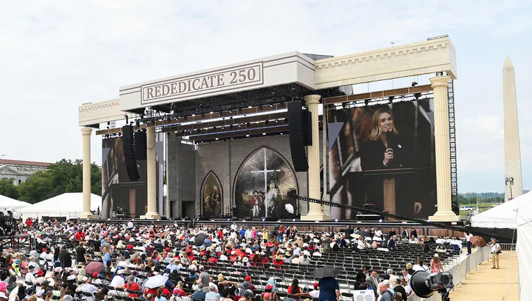

Breaking News
 May 18
May 18
by Olivia Bennett
Thousands Gather at National Mall for Trump-Backed “Rededicate 250” Prayer Rally
Thousands gathered at the National Mall for the Trump-backed “Rededicate 250” prayer rally, sparking debate over religion, patriotism, and church-state separation.
Thousands of people gathered on the National Mall in Washington, D.C., for a massive daylong prayer rally titled “Rededicate 250: A National Jubilee of Prayer, Praise & Thanksgiving,” one of the first major events tied to the upcoming 250th anniversary of the United States. The rally combined worship music, patriotic celebration, scripture readings, and speeches from conservative political and religious figures. The event was supported by the Trump administration and organized through Freedom 250, a White House-backed public-private initiative connected to the country’s semiquincentennial celebrations. Organizers described the gathering as a spiritual rededication of America as “One Nation Under God.” Large crowds filled the National Mall throughout the nine-hour event while Christian worship bands performed and speakers called for national prayer, religious revival, and renewed commitment to America’s Christian roots. Attendees waved American flags, wore patriotic clothing, and participated in collective prayers for the country’s future. President Donald Trump did not appear in person but participated through a prerecorded video message in which he read scripture and praised the event. Vice President JD Vance, Secretary of State Marco Rubio, Defense Secretary Pete Hegseth, and House Speaker Mike Johnson were among several administration officials connected to the rally either through speeches or video remarks. Organizers linked the event symbolically to May 17, 1776, when the Continental Congress declared a national day of fasting and prayer during the American Revolution. Supporters argued the rally reflected an effort to reconnect the country with its religious heritage before the nation’s 250th anniversary celebrations next year. The event became one of the largest explicitly religious gatherings connected to the Trump administration’s broader patriotic and cultural initiatives during his second term.
Christian Nationalism and Church-State Concerns Spark Criticism
The prayer rally also generated significant controversy because critics argued it blurred the constitutional separation between church and state while promoting a narrowly Christian vision of American identity. Civil-liberties groups, secular organizations, and progressive faith leaders staged demonstrations outside the National Mall event. Critics pointed out that nearly all featured speakers were conservative Christians, with Rabbi Meir Soloveichik serving as one of the few non-Christian participants. Muslim, Buddhist, Indigenous, and most mainline Protestant voices were largely absent from the speaker lineup. Organizations including the Freedom From Religion Foundation and Faithful America accused the event of promoting Christian nationalism and using government support to endorse a specific religious ideology. Protesters carried signs criticizing religious extremism and warning against government involvement in faith-based political movements. Several scholars and religious leaders argued the rally reflected a broader political effort to redefine the United States as fundamentally a Christian nation rather than a religiously pluralistic democracy. But critics said such messaging could alienate Americans of minority faiths or those who are nonreligious. Concerns were also raised about the use of public resources and the involvement of the White House in the event. Because Freedom 250 is run in partnership with the federal government, critics said taxpayer dollars may have been used to support a religious event focused almost exclusively on one faith tradition. Supporters vigorously rebuffed those criticisms, saying the event honored America’s historical religious roots, not that it excluded other groups. The debate underscored growing national divisions over the role of religion in public life, especially as the number of Americans identifying as atheist, agnostic or religiously unaffiliated grows.
Conservative Religious Leaders and Trump Allies Take Center Stage
The rally lineup was packed with conservative evangelical leaders, pro-Trump pastors and administration allies who cast the event as a spiritual revival and a defense of the nation’s religious identity. Speakers repeatedly emphasized themes involving patriotism, Christianity, and national renewal. House Speaker Mike Johnson delivered remarks in person while Vice President JD Vance, Marco Rubio, Pete Hegseth, and Director of National Intelligence Tulsi Gabbard appeared through prerecorded video messages. Administration officials repeatedly referenced America’s “Judeo-Christian heritage” and called for national prayer and moral revival. Prominent religious figures participating in the event included Franklin Graham, Cardinal Timothy Dolan, Jonathan Falwell, Eric Metaxas, Lorenzo Sewell, Jentezen Franklin, and Rabbi Meir Soloveichik. Several speakers are widely associated with conservative political activism and Christian nationalist movements. The Guardian reported that some participants have previously promoted election conspiracy theories, harsh anti-Democratic rhetoric, or militant religious nationalism. Critics argued the lineup reflected an increasingly close alliance between conservative evangelical movements and Trump-era Republican politics. At the same time, supporters viewed the rally as a long-overdue public affirmation of faith after years of declining religious participation and increasing secularization across American society. Many attendees described the event as uplifting, hopeful, and spiritually important. Trump himself strongly promoted the gathering through Truth Social and other statements leading up to the event. Organizers repeatedly framed the rally as part of a broader effort to spiritually prepare the country for America’s 250th anniversary celebrations in 2026. The event also reflected the Trump administration’s broader strategy of strengthening relationships with conservative Christian voters, who remain one of the president’s strongest political constituencies.
Religion and Politics Become Increasingly Intertwined Under Trump
The National Mall rally became another major example of how religion and politics have become increasingly interconnected during Donald Trump’s second presidency. The administration has consistently emphasized Christianity and faith-based initiatives as central parts of its political identity and governing philosophy. The White House recently created expanded faith-based outreach programs and increased the visibility of evangelical advisers inside the administration. Critics argue these efforts reflect a growing effort to merge conservative Christianity with government institutions and public policy. The “Rededicate 250” rally also connected directly to broader patriotic messaging surrounding America’s upcoming 250th anniversary in 2026. The administration has pushed a lot of cultural and symbolic initiatives intended to highlight national pride, historical identity and traditional American values. Supporters say these efforts are helping restore unity, patriotism and moral purpose in a time of political polarization and cultural conflict. Many attendees said they viewed prayer and religion as essential foundations of American democracy and national strength. However, opponents warned the growing fusion of government and religion risks undermining religious freedom and alienating millions of Americans who do not share the same beliefs. Critics pointed to surveys showing many Americans remain uncomfortable with mixing religion and politics too closely. The rally therefore became more than a religious gathering. Under the Trump administration it became a highly symbolic political and cultural flashpoint reflecting broader debates over nationalism, faith, constitutional principles and American identity
Olivia Bennett is a U.S. political correspondent reporting on federal policy, election developments, and national governance issues.